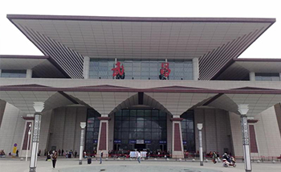

武昌火车站/宏基客运站→长江职业学院

南校区
地铁：
轨道交通四号线→轨道交通二号线→长职南校区
起点：武昌火车站/宏基客运站
步行254米至地铁四号线武昌火车站（C口）
从武昌火车站上车（C口进）至中南路站（2站）末班车 22:30
站内换乘地铁二号线至光谷广场站（6站）下车（C口出）末班车 22:30
南行600米即到。
公交：
738路/529路→长职南校区
起点：武昌火车站/宏基客运站
步行223米至中山路武昌火车站公交站
乘坐738路（或529路）公交，至雄楚大道民族大道口（17站）下车 末班车 22：00
下车后即到。
东校区
地铁：
轨道交通四号线→轨道交通二号线→788路→长职东校区
起点：武昌火车站/宏基客运站
步行254米至地铁四号线武昌火车站（C口）
从武昌火车站上车（C口进）至中南路站（2站）下车 末班车 22:30
站内换乘地铁二号线至光谷广场站（6站）下车（C口出）末班车 22:30
步行430米至民族大道光谷广场公交站
换乘788路公交，至光谷一路流芳园路（12站）下车 末班车 21：30
步行809米即到.
公交:
529路→788路→长职东校区
起点:武昌火车站
步行232米至中山路武昌火车站公交站
乘坐529路公交，至关山大道曙光村(24站)下车 末班车 21:30
换乘788路公交，至光谷一路流芳园路(5站) 末班车 21:30
步行809米即到。
西校区
地铁:
轨道交通四号线→797路→长职西校区
起点:武昌火车站
步行254米至地铁四号线武昌火车站（C口）
从武昌火车站上车（C口进）至中南路站（2站）下车 (D2口出) 末班车 22:30
步行657米至武珞路丁字桥公交站
乘坐797路公交，至文昌街文馨街(11站)下车 末班车 21:35
步行2.2公里即到。
公交:
570路→长职西校区
起点:武昌火车站
步行107米至武昌火车站东广场公交站
乘坐570路公交，至南湖大道张吴湾(14站)下车 末班车 20:00
步行1.1公里即到。